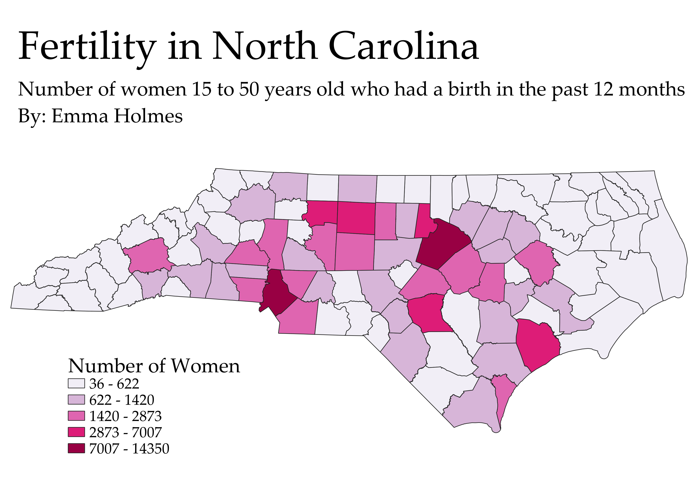

Homework 6: Census data choropleth
Emma Holmes
This map shows the number of women between the ages of 15 and 50 years old who gave birth in the past 12 months in each county.
In the map, Mecklenburg and Wake counties are the darkest because they have had the most women give birth in their counties, this makes sense because they are the most populous counties in the state.
This also shows a flaw in the map, that the numbers do not take into consideration the population, so there could be a different county that is actually more fertile than Wake or Mecklenburg counties.

Data used for this project
CSV dataset on Fertility in North Carolina
Link to CSV dataset in GitHub
Link to GeoJSON file